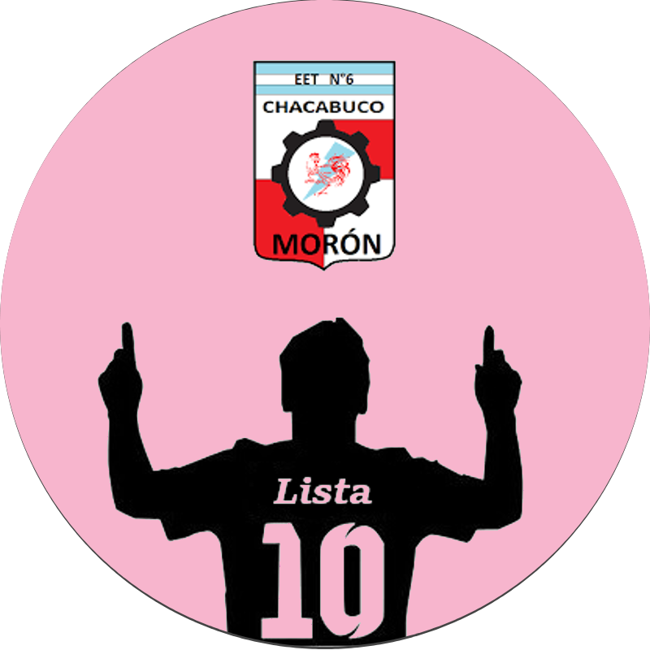

Lista N°10
La lista N°10 es candidata para el Centro de Estudiantes del Colegio, tiene como objetivo principal mejorar la calidad de vida de los alumnos y promover un ambiente propicio para el aprendizaje. Para lograrlo, se han propuesto diversas iniciativas que abarcan diferentes aspectos.
Propuestas:
- Negociar con empresas para ver si tienen cosas para donarnos que a ellos ya no les sirvan (Ya sea pintura, productos de limpieza, cosas para el taller, mobiliario, etc.)
- A los baños que estan cerca de taller les faltan trabas y una buena instalación para que fluya el agua correctamente. Ademas de productos de higiene como papel hiegiénico o jabón para las manos.
- Productos de limpieza, para mantener una escuela en perfecto estado y limpia.
- Ayudar en el proyecto o hacer un proyecto para impulsar el area del reciclaje.
- Hablar con el consejo para pedir o exigir que halla mas auxiliares en el colegio para un ambiente en mejor estado.
- Pedir a Tránsito un semáforo o que muevan uno para evitar accidentes hacia los alumnos y proporcionar su bienestar.
- Preguntarle a los respectivos directivos del colegio si alumnos con emprendimientos o que simplemente quieran vender algo, puedan hacer el mismo en los recreos con una respectiva autorizacion dando por sentado que es lo que van a vender, un porcentaje del mismo queremos que vaya a cooperadora, para poder comprar mas instrumental.
- Impulsar a que los alumnos paguen mas cooperadora.
- Charlas de salud mental, ESI, o como manejar el estrés, esto lo vemos sumamente importante ya que al estar en un colegio técnico la exigencia no es la misma que en uno normal.
- Hacer muestras de musica, torneos de truco, uno, futbol, voley, handball para recaudar dinero
Participantes:
